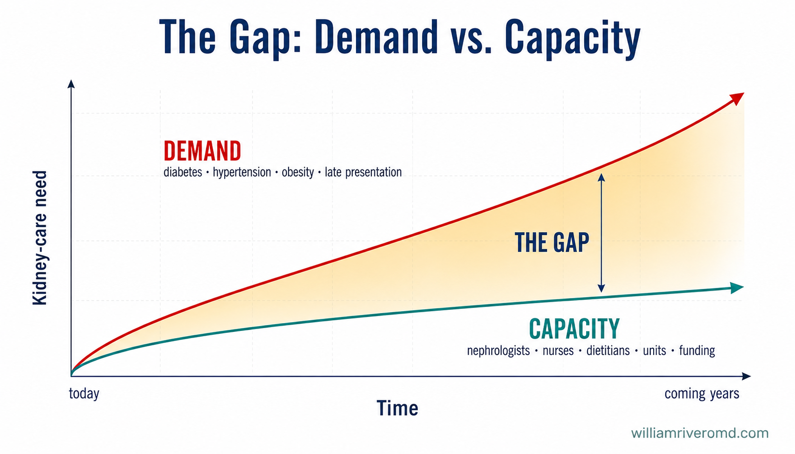

The gap between demand and capacity Ang agwat sa pagitan ng pangangailangan at kakayahan Ang gintang taliwala sa panginahanglan ug katakus Ing agwat king pilatan ning pangailangan at kayang gawan
Everything that follows comes back to one picture: the need for kidney care is climbing steeply, while the capacity to provide it — nephrologists, renal nurses, dietitians, dialysis units, and funding — rises far more slowly. The space between those two lines is where a Filipino nephrologist works every day. Lahat ng susunod ay bumabalik sa isang larawan: ang pangangailangan para sa pag-aalaga sa bato ay matarik na umaakyat, habang ang kakayahang ibigay ito — mga nephrologist, renal nurse, dietitian, dialysis unit, at pondo — ay mas mabagal na tumataas. Ang puwang sa pagitan ng dalawang linyang iyon ang pinagtatrabahuhan ng isang Pilipinong nephrologist araw-araw. Tanan nga mosunod mobalik sa usa ka hulagway: ang panginahanglan sa pag-atiman sa kidney nagsaka og taas, samtang ang katakus sa paghatag niini — mga nephrologist, renal nurse, dietitian, dialysis unit, ug pondo — mas hinay nga mosaka. Ang gintang taliwala niadtong duha ka linya mao ang gibuhatan sa usa ka Pilipinhong nephrologist matag adlaw. Ngan a tutuki mibabalik king metung a litratu: ing pangailangan para king pamag-ingat king balugbug masikan ya munta paitas, kabang ing kayang gawan a ibie ya — deng nephrologist, renal nurse, dietitian, dialysis unit, at pondu — mas malugud yang munta paitas. Ing agwat king pilatan da reng aduang linya ita ya ing pamipagobra ning metung a Pilipinu a nephrologist aldo-aldo.

An epidemic — and patients who are sicker than ever Isang epidemya — at mga pasyenteng mas may sakit kaysa dati Usa ka epidemya — ug mga pasyente nga mas masakiton kaysa kaniadto Metung a epidemya — at deng pasyente a mas masakit kesa kanitang minuna
Chronic kidney disease is rising in step with diabetes, poorly controlled hypertension, and growing obesity and metabolic syndrome. Too many patients are first identified at CKD Stage 4 or 5 — when most of the kidney is already gone. Ang chronic kidney disease ay tumataas kasabay ng diabetes, hindi kontroladong altapresyon, at lumalaking obesity at metabolic syndrome. Napakaraming pasyente ang unang natutukoy sa CKD Stage 4 o 5 — kung kailan halos wala nang natitira sa bato. Ang chronic kidney disease nagtaas dungan sa diabetes, dili maayong pagdumala sa hataas nga BP, ug nagtubo nga obesity ug metabolic syndrome. Daghan kaayong pasyente ang unang nailhan sa CKD Stage 4 o 5 — kung diin halos wala nay nahibilin sa kidney. Ing chronic kidney disease munta yang paitas kayabe ning diabetes, e makontrul a altapresyon, at dadagul a obesity at metabolic syndrome. Dakal a pasyente ing mumunang akit king CKD Stage 4 o 5 — nung kapilan halos ala nang atilid king balugbug.
The national registry makes the speed plain: dialysis patients rose about 22% in a single year — from 53,296 in 2023 to 64,845 in 2024 (NKTI / Renal Disease Control Program). Hypertension (about 33%) and diabetes (about 30%) together cause nearly two-thirds of it, and kidney disease is now linked to roughly 39,000 Filipino deaths each year. Malinaw na ipinapakita ng pambansang rehistro ang bilis: tumaas ng halos 22% ang mga pasyenteng nasa dialysis sa loob lamang ng isang taon — mula 53,296 noong 2023 tungo sa 64,845 noong 2024 (NKTI / Renal Disease Control Program). Ang altapresyon (mga 33%) at diabetes (mga 30%) ang sama-samang sanhi ng halos dalawang-katlo nito, at ang sakit sa bato ngayon ay nauugnay sa humigit-kumulang 39,000 pagkamatay ng Pilipino kada taon. Klaro nga gipakita sa nasudnong rehistro ang kapaspas: misaka og mga 22% ang mga pasyente sa dialysis sulod lang sa usa ka tuig — gikan 53,296 niadtong 2023 ngadto sa 64,845 niadtong 2024 (NKTI / Renal Disease Control Program). Ang hataas nga BP (mga 33%) ug diabetes (mga 30%) maoy hiniusang hinungdan sa hapit duha-katlo niini, ug ang sakit sa kidney karon nalambigit sa gibana-banang 39,000 nga kamatayon sa Pilipinhon matag tuig. Malinaw nang pakit ning pambansang rehistro ing kasiglu: dinagul yang mga 22% deng pasyente king dialysis king kilub mu ning metung a banua — manibat 53,296 anyang 2023 papunta king 64,845 anyang 2024 (NKTI / Renal Disease Control Program). Ing altapresyon (mga 33%) at diabetes (mga 30%) ya ing sabay a mula ning halos aduang-katlu kaniti, at ing sakit king balugbug ngeni mikakawing king mialiwa-liwa a 39,000 a kamatayan da reng Pilipinu balang banua.
The patient in front of me is rarely "just" a kidney patient. Today they usually carry CKD plus diabetes, heart failure, coronary disease, atrial fibrillation, frailty, and malnutrition all at once. Practicing modern nephrology now means being fluent in cardiology, endocrinology, nutrition, critical care, and palliative care. The complexity of every decision has grown sharply over the last decade. Ang pasyenteng nasa harap ko ay bihirang pasyente "lamang" sa bato. Ngayon, kadalasan ay may CKD kasama ang diabetes, heart failure, sakit sa puso, atrial fibrillation, kahinaan, at malnutrisyon nang sabay-sabay. Ang modernong nephrology ngayon ay nangangahulugan ng pagiging bihasa sa cardiology, endocrinology, nutrisyon, critical care, at palliative care. Ang pagiging kumplikado ng bawat desisyon ay matinding lumaki sa nakaraang dekada. Ang pasyente sa akong atubangan panagsa ra "kidney patient lang". Karon kasagaran adunay CKD dugang ang diabetes, heart failure, sakit sa kasingkasing, atrial fibrillation, kaluya, ug malnutrisyon nga dungan. Ang modernong nephrology karon nagpasabot nga hanas sa cardiology, endocrinology, nutrisyon, critical care, ug palliative care. Ang pagkakomplikado sa matag desisyon misaka pag-ayo sa milabay nga dekada. Ing pasyente king arapan ku malagad yang "pasyente mu king balugbug". Ngeni karaniwan atin yang CKD kayabe ne ing diabetes, heart failure, sakit king puso, atrial fibrillation, kaluyan, at malnutrisyon a misan-misan. Ing modernu a nephrology ngeni buri sabian sanay king cardiology, endocrinology, nutrisyon, critical care, at palliative care. Ing pagka-komplikadu ning balang desisyon dinagul yang masican king milabas a dekada.
The most preventable challenge of all Ang pinaka-maiiwasang hamon sa lahat Ang labing kapugngan nga hagit sa tanan Ing pekamalyaring likasan a subuk king ngan
Many referrals reach me only when the eGFR is already below 15, with severe anemia, dangerous potassium levels, fluid in the lungs, or the symptoms of uremia. By then the menu of options is short. Yet during CKD Stages 2 and 3 — months or years earlier — progression can often still be slowed. Maraming referral ang umaabot sa akin kapag ang eGFR ay mababa na sa 15, may matinding anemia, mapanganib na antas ng potasyum, tubig sa baga, o mga sintomas ng uremia. Sa puntong iyon, kakaunti na ang mga pagpipilian. Ngunit sa CKD Stages 2 at 3 — mga buwan o taon nang mas maaga — kadalasang maaari pa ring pabagalin ang paglala. Daghang referral nga moabot kanako kung ang eGFR ubos na sa 15, adunay grabe nga anemia, peligrosong potassium, tubig sa baga, o mga simtomas sa uremia. Niana nga punto, mubo na ang mga kapilian. Apan sa CKD Stages 2 ug 3 — bulan o tuig nga mas sayo — ang pag-grabe kasagaran mahimo pa nga hinayon. Dakal a referral ing datang kanaku nung ing eGFR mababa ne king 15, atin grabe a anemia, makatakut a potassium, danum king baga, o deng simtomas ning uremia. King ita a punto, kaunti na la deng pamamili. Dapot king CKD Stages 2 at 3 — bulan o banua a mas maaga — ing pamaglala karaniwan malyari pang pabagalan.
Late referral is not a small thing. It means emergency dialysis starts through a hastily placed neck catheter, more hospital admissions, higher costs, and — most painfully — worse survival. This is the challenge a single conversation could change. Ang huling referral ay hindi maliit na bagay. Ibig sabihin nito ay emergency na dialysis sa pamamagitan ng minadaling kateter sa leeg, mas maraming pagpapaospital, mas mataas na gastos, at — pinakamasakit — mas mababang tsansa ng kaligtasan. Ito ang hamong mababago ng isang pag-uusap lamang. Ang ulahi nga referral dili gamay nga butang. Nagpasabot kini og emergency dialysis pinaagi sa nagdali nga kateter sa liog, daghang admission sa ospital, mas taas nga gasto, ug — labing sakit — mas ubos nga survival. Mao kini ang hagit nga mabag-o sa usa ka panag-istorya. Ing tauli a referral e ya malating bage. Buri sabian niti emergency dialysis kapamilatan ning minadaling kateter king batal, dakal a pamag-ospital, mas matas a gastu, at — pekamasakit — mas mababa a tsansa king kaligtasan. Iti ya ing subuk a malyaring abaluan ning metung a pamamiyabe.
If you remember one thing from this page Kung iisa lang ang tatandaan mo rito Kung usa ra ka butang ang hinumdoman mo dinhi Nung metung mu ing tandanan mu keni
Ask for your kidney numbers early — a blood test (eGFR) and a urine test (ACR). If you have diabetes or high blood pressure, ask once a year. A referral to a nephrologist at Stage 3, not Stage 5, can change the entire course of your disease. Hingin ang iyong kidney numbers nang maaga — isang blood test (eGFR) at urine test (ACR). Kung may diabetes ka o altapresyon, magpasuri kada taon. Ang referral sa nephrologist sa Stage 3, hindi sa Stage 5, ay maaaring magbago sa buong takbo ng iyong sakit. Pangayoa ang imong kidney numbers nga sayo — usa ka blood test (eGFR) ug urine test (ACR). Kung adunay ka diabetes o hataas nga BP, pasusi matag tuig. Ang referral sa nephrologist sa Stage 3, dili sa Stage 5, mahimong mausab ang tibuok dagan sa imong sakit. Akwan me ing kekang kidney numbers a maaga — metung a blood test (eGFR) at urine test (ACR). Nung atin kang diabetes o altapresyon, magpasuri ka balang banua. Ing referral king nephrologist king Stage 3, e king Stage 5, malyari nang abaluan ing mabilug a dalan ning kekang sakit.
The system finds it easier to fund failure than prevention Mas madaling pondohan ng sistema ang pagkabigo kaysa pag-iwas Mas sayon pondohan sa sistema ang pagkapakyas kaysa pagpugong Mas mayap pondwan ning sistema ing katalunan kesa pamaglikas
PhilHealth has genuinely and substantially expanded dialysis coverage — that is real progress, and it has saved lives. But the incentives are still tilted: it is far easier to fund a dialysis session than to fund the prevention, screening, and multidisciplinary CKD care that would keep a patient off dialysis in the first place. The result is a paradox where the system pays well to rescue, and poorly to prevent. Malaki at tunay na pinalawak ng PhilHealth ang saklaw ng dialysis — totoong pag-unlad iyon, at nakapagligtas ng buhay. Ngunit ang mga insentibo ay nakakiling pa rin: mas madaling pondohan ang isang dialysis session kaysa sa pag-iwas, screening, at multidisciplinary na pangangalaga sa CKD na pipigil sa pasyente na mapunta sa dialysis. Ang resulta ay isang paradox kung saan mahusay magbayad ang sistema para sumagip, ngunit kulang para mag-iwas. Ang PhilHealth tinuod ug dako nga nagpalapad sa dialysis coverage — tinuod kana nga kalamboan, ug nakaluwas og kinabuhi. Apan ang mga insentibo nagpabilin nga nakiling: mas sayon pondohan ang usa ka dialysis session kaysa pondohan ang pagpugong, screening, ug multidisciplinary nga CKD care nga makapugong sa pasyente gikan sa dialysis. Ang sangputanan usa ka paradox diin maayo mobayad ang sistema aron moluwas, apan kulang aron mopugong. Ing PhilHealth tutu at maragul a pepalwak ne ing dialysis coverage — tutung pamanlawang ita, at mekapaniligtas yang bie. Dapot deng insentibo mikiling la pa: mas mayap pondwan ing metung a dialysis session kesa king pamaglikas, screening, at multidisciplinary a CKD care a magpugung king pasyente king dialysis. Ing resulta metung yang paradox a nung nu masalese mamayad ing sistema para maniligtas, dapot kulang para maglikas.
For families, the costs do not stop at the dialysis chair. Transportation, regular laboratory monitoring, erythropoiesis-stimulating agents and iron for anemia, phosphate binders, and proper nutrition all add up. I often find myself acting as much like a financial navigator as a physician — helping families find the affordable version of good care. Para sa mga pamilya, hindi nagtatapos ang gastos sa dialysis chair. Ang pamasahe, regular na lab monitoring, mga gamot para sa anemia (ESA at iron), phosphate binders, at tamang nutrisyon ay nagkakaipon. Madalas kong napupunang para akong financial navigator na rin bukod sa pagiging doktor — tumutulong sa mga pamilya na mahanap ang abot-kayang bersyon ng mabuting pangangalaga. Alang sa mga pamilya, dili mohunong ang gasto sa dialysis chair. Ang pamasahe, regular nga lab monitoring, mga tambal sa anemia (ESA ug iron), phosphate binders, ug husto nga nutrisyon magtapok tanan. Sagad makaplagan nako ang akong kaugalingon nga murag financial navigator usab gawas sa pagkadoktor — nagtabang sa mga pamilya nga makakaplag sa barato nga bersyon sa maayong pag-atiman. Para king pamilya, e tumuknang ing gastu king dialysis chair. Ing pamasahe, regular a lab monitoring, deng gamut para king anemia (ESA at iron), phosphate binders, at tamang nutrisyon magtipun la ngan. Karaniwan akit ku ing sarili ku a anti kung financial navigator pa bukud king pamagdoktor — saup king pamilya a makakit king abut-kaya a bersyon ning mayap a pamag-ingat.
And there is a quieter frustration: many of the best modern medicines — SGLT2 inhibitors like dapagliflozin and empagliflozin, finerenone, potassium binders, and newer anemia therapies — remain out of reach on cost alone. The clinical evidence advances faster than the systems that pay for it. I can know exactly what would help, and still watch it sit beyond a family's budget. At may mas tahimik na hinanakit: marami sa pinakamahusay na modernong gamot — SGLT2 inhibitors tulad ng dapagliflozin at empagliflozin, finerenone, potassium binders, at mga bagong gamot sa anemia — ay nananatiling hindi abot dahil lang sa presyo. Ang ebidensyang klinikal ay mas mabilis kaysa sa mga sistemang nagbabayad nito. Alam kong-alam ko kung ano ang makakatulong, ngunit panonoorin ko itong lampas sa budget ng pamilya. Ug adunay mas hilom nga kasagmuyo: daghan sa labing maayong modernong tambal — SGLT2 inhibitors sama sa dapagliflozin ug empagliflozin, finerenone, potassium binders, ug mga bag-ong tambal sa anemia — nagpabilin nga dili maabot tungod lang sa presyo. Ang clinical evidence mas paspas kaysa sa mga sistema nga mobayad niini. Mahibaw-an nako gayod unsa ang makatabang, ug magtan-aw gihapon nga lapas kini sa budget sa pamilya. At atin mas tahimik a sama ning loob: dakal king pekamayap a modernu a gamut — SGLT2 inhibitors anti ning dapagliflozin at empagliflozin, finerenone, potassium binders, at deng bayung gamut king anemia — manatili lang a e abut uli ning presyu. Ing clinical evidence mas masiglu kesa king sistema a mamayad kaniti. Balu kung tutu nanu ing makasaup, dapot lawan ke pa muring lampas king budget ning pamilya.
Too few hands, spread too thin Kakaunting kamay, sobrang nakakalat Pipila ra ka kamot, sobra ka nipis pagkatag Kaunting gamat, sobrang mikalat
The number of nephrologists has grown, but it clusters in Metro Manila, Cebu, and Davao. Many provinces remain underserved: one nephrologist may cover several hospitals, dialysis units may rely on a visiting specialist, and patients travel hours for a single consultation. The wider team — dialysis nurses, renal dietitians, transplant coordinators, technicians — is just as short, and migration abroad keeps thinning it. Dumami ang bilang ng nephrologist, ngunit nakasentro ito sa Metro Manila, Cebu, at Davao. Maraming probinsya ang kulang sa serbisyo: isang nephrologist ang maaaring sumaklaw sa ilang ospital, ang mga dialysis unit ay umaasa sa bumibisitang espesyalista, at ang mga pasyente ay naglalakbay ng ilang oras para sa isang konsultasyon. Ang mas malawak na koponan — dialysis nurse, renal dietitian, transplant coordinator, technician — ay kulang din, at ang pangingibang-bansa ay patuloy na nagpapanipis dito. Midaghan ang gidaghanon sa nephrologist, apan nagpundok kini sa Metro Manila, Cebu, ug Davao. Daghang probinsya ang kulang sa serbisyo: usa ka nephrologist mahimong moserbisyo sa pipila ka ospital, ang mga dialysis unit nagsalig sa bisita nga espesyalista, ug ang mga pasyente magbiyahe og mga oras alang sa usa ka konsultasyon. Ang mas lapad nga team — dialysis nurse, renal dietitian, transplant coordinator, technician — kulang usab, ug ang pag-abroad nagpadayon sa pagpanipis niini. Dinagul ya ing bilang da reng nephrologist, dapot mitipun ya king Metro Manila, Cebu, at Davao. Dakal a probinsya ing kulang king serbisyu: metung a nephrologist ing malyaring sumaklo king pilan a ospital, deng dialysis unit umasa la king bumisita a espesyalista, at deng pasyente biyahe la ning pilan oras para king metung a konsulta. Ing mas malwak a team — dialysis nurse, renal dietitian, transplant coordinator, technician — kulang ya rin, at ing pamag-abroad tuluy-tuluy yang magpanipis kaniti.
In a typical dialysis center, the nephrologist is rarely only a clinician. The same person is often medical director, quality officer, infection-control officer, and de facto business manager — juggling staff turnover, the supply of dialyzers and bicarbonate, water-treatment maintenance, drug shortages, DOH inspections, PhilHealth audits, and an ever-growing pile of documentation. Sa karaniwang dialysis center, bihira lamang na clinician ang nephrologist. Kadalasan ang parehong tao ay medical director, quality officer, infection-control officer, at de facto business manager — hinahawakan ang turnover ng kawani, suplay ng dialyzer at bicarbonate, maintenance ng water treatment, kakulangan sa gamot, inspeksyon ng DOH, audit ng PhilHealth, at patuloy na dumadami na dokumentasyon. Sa kasagarang dialysis center, panagsa ra nga clinician lang ang nephrologist. Kasagaran ang samang tawo mao ang medical director, quality officer, infection-control officer, ug de facto business manager — nagdumala sa turnover sa staff, suplay sa dialyzer ug bicarbonate, maintenance sa water treatment, kakulang sa tambal, inspeksyon sa DOH, audit sa PhilHealth, ug nagkadaghan nga dokumentasyon. King karaniwan a dialysis center, malagad mu a clinician ing nephrologist. Karaniwan ing parehu a tau ya ing medical director, quality officer, infection-control officer, at de facto business manager — bibitbit king turnover da reng staff, suplay da reng dialyzer at bicarbonate, maintenance ning water treatment, kakulangan king gamut, inspeksyon ning DOH, audit ning PhilHealth, at tuluy-tuluy a dadagul a dokumentasyon.
Transplant and home dialysis — open more often than people think Transplant at home dialysis — mas madalas na bukas kaysa inaakala Transplant ug home dialysis — mas sagad bukas kaysa gihunahuna Transplant at home dialysis — mas karaniwan a mebuklat kesa king isip
A kidney transplant is the best treatment for kidney failure — usually a longer, fuller life than dialysis. But the road is narrow here: a limited donor pool, long waiting times, cost and geographic barriers, and relatively few transplant centers leave many good candidates on dialysis for years. Ang kidney transplant ang pinakamabuting paggamot sa pagkabigo ng bato — kadalasan ay mas mahaba at mas buong buhay kaysa dialysis. Ngunit makitid ang daan dito: limitadong donor, mahabang paghihintay, gastos at heograpikong hadlang, at kakaunting transplant center ang nag-iiwan sa maraming magandang kandidato sa dialysis nang maraming taon. Ang kidney transplant mao ang labing maayong tambal sa pagkapakyas sa kidney — kasagaran mas taas ug mas bug-os nga kinabuhi kaysa dialysis. Apan pig-ot ang dalan dinhi: limitado nga donor, taas nga paghulat, gasto ug geograpikong babag, ug pipila ra ka transplant center ang nagbilin sa daghang maayong kandidato sa dialysis sulod sa mga tuig. Ing kidney transplant ya ing pekamayap a lunas king katalunan ning balugbug — karaniwan mas makaba at mas mabilug a bie kesa dialysis. Dapot makitid ya ing dalan keni: kaunting donor, makaba a pamanaya, gastu at heograpiku a balakid, at kaunting transplant center ing magbalag king dakal a mayap a kandidatu king dialysis king dakal a banua.
Home therapies — peritoneal dialysis especially — are underused, even though they fit an archipelago beautifully: less travel, more independence, dialysis done at home. The barriers are education gaps, infrastructure, training needs, and a cultural pull toward in-center care. Wider use of PD and home dialysis is one of the clearest ways to ease the strain on our workforce and reach island and rural patients. Ang home therapies — lalo na ang peritoneal dialysis — ay kulang sa paggamit, kahit na akma ito sa isang kapuluan: mas kaunting biyahe, mas malayang pamumuhay, dialysis na ginagawa sa bahay. Ang mga hadlang ay kakulangan sa edukasyon, imprastraktura, pangangailangan sa pagsasanay, at hilig sa in-center na pangangalaga. Ang mas malawak na paggamit ng PD at home dialysis ay isa sa pinakamalinaw na paraan upang paginhawahin ang pasanin ng aming workforce at maabot ang mga pasyente sa isla at probinsya. Ang home therapies — labi na ang peritoneal dialysis — kulang sa paggamit, bisan pa nga haom kini sa usa ka kapupuan: mas gamay nga biyahe, mas independente, dialysis nga buhaton sa balay. Ang mga babag mao ang kakulang sa edukasyon, imprastraktura, panginahanglan sa training, ug kultural nga pagkiling sa in-center care. Ang mas lapad nga paggamit sa PD ug home dialysis usa sa labing klaro nga paagi aron paghupay sa kabug-at sa among workforce ug makab-ot ang mga pasyente sa isla ug probinsya. Ing home therapies — lalu na ing peritoneal dialysis — kulang ya king pamagamit, agyang akma ya king metung a kapuluan: mas kaunting biyahe, mas malaya a pamibie, dialysis a gagawan king bale. Deng balakid kakulangan king edukasyon, imprastraktura, pangailangan king training, at kultural a pamikiling king in-center care. Ing mas malwak a pamagamit ning PD at home dialysis metung ya king pekamalinaw a paralan para pakalmahan ing pasan ning kekeng workforce at abut deng pasyente king pulu at probinsya.
A question worth asking your doctor Isang tanong na sulit itanong sa iyong doktor Usa ka pangutana nga angay ipangutana sa imong doktor Metung a kutang a sulit itanung king kekang doktor
"Am I a candidate for a kidney transplant, or for peritoneal / home dialysis?" These roads are open more often than patients realize — and the time to ask is before dialysis becomes an emergency. "Kandidato ba ako para sa kidney transplant, o para sa peritoneal / home dialysis?" Mas madalas na bukas ang mga daang ito kaysa inaakala ng mga pasyente — at ang tamang panahon para magtanong ay bago maging emergency ang dialysis. "Kandidato ba ko para sa kidney transplant, o para sa peritoneal / home dialysis?" Mas sagad bukas kini nga mga dalan kaysa gihunahuna sa mga pasyente — ug ang husto nga panahon sa pagpangutana mao ang una pa mahimong emergency ang dialysis. "Kandidatu ku waring para king kidney transplant, o para king peritoneal / home dialysis?" Mas karaniwan a mebuklat la reng dalan a ini kesa king isip da reng pasyente — at ing tamang panaun para magkutang ya ing bayu maging emergency ing dialysis.
From "dialysis rescue" to "kidney-health preservation" Mula sa "pagsagip sa dialysis" tungo sa "pagpapanatili ng kalusugan ng bato" Gikan sa "pagluwas pinaagi sa dialysis" ngadto sa "pagpreserbar sa panglawas sa kidney" Manibat king "pamaniligtas king dialysis" papunta king "pamipanatili ning kalusugan ning balugbug"
Here is the hopeful part. The Philippines has succeeded in expanding access to dialysis — that fight is largely won. The next challenge is different and, in many ways, easier on everyone: shifting the center of gravity toward preserving kidney health before failure ever arrives. These are the priorities I believe will define the next decade. Narito ang bahaging puno ng pag-asa. Nagtagumpay ang Pilipinas sa pagpapalawak ng access sa dialysis — halos panalo na ang laban na iyon. Ang susunod na hamon ay iba at, sa maraming paraan, mas magaan para sa lahat: ilipat ang sentro ng pagtuon sa pagpapanatili ng kalusugan ng bato bago pa man dumating ang pagkabigo. Ito ang mga prayoridad na sa tingin ko ay huhubog sa susunod na dekada. Ania ang bahin nga puno sa paglaom. Milampos ang Pilipinas sa pagpalapad sa access sa dialysis — daku na nga nadaog kana nga away. Ang sunod nga hagit lahi ug, sa daghang paagi, mas sayon sa tanan: ibalhin ang sentro ngadto sa pagpreserbar sa panglawas sa kidney una pa moabot ang pagkapakyas. Mao kini ang mga prayoridad nga sa akong tan-aw mohulma sa sunod nga dekada. Atyu ya ing dake a mitmu king pag-asa. Mitagumpe ya ing Pilipinas king pamagpalwak ning access king dialysis — halos panalu ne ita a laban. Ing tutuking subuk aliwa ya at, king dakal a paralan, mas magaan king ngan: ilipat ing sentru king pamipanatili ning kalusugan ning balugbug bayu pa datang ing katalunan. Iti la reng prayoridad a king pamanakit ku huhubug king tutuking dekada.

What you can do — turning all of this into action Ano ang magagawa mo — gawing aksyon ang lahat ng ito Unsa ang imong mahimo — himoon nga aksyon kining tanan Nanu ing magawa mu — gawan a aksyon ngan ini
You cannot fix the system — but you can change your own course, and the system shifts one informed patient at a time. Hindi mo maaaring ayusin ang sistema — ngunit mababago mo ang sarili mong takbo, at nagbabago ang sistema isang nalalamang pasyente sa bawat pagkakataon. Dili nimo maayo ang sistema — apan mausab nimo ang imong kaugalingong dagan, ug mabag-o ang sistema usa ka nahibalo nga pasyente matag higayon. E mu malyaring ayusan ing sistema — dapot abaluan mu ing sarili mung dalan, at mgaliwa ing sistema metung a makabalu a pasyente king balang ucni.
- Know your numbers: ask for an eGFR (blood) and ACR (urine) test — yearly if you have diabetes or high blood pressure.Alamin ang iyong numero: humingi ng eGFR (dugo) at ACR (ihi) test — taunan kung may diabetes ka o altapresyon.Hibaloi ang imong numero: pangayo og eGFR (dugo) ug ACR (ihi) test — matag tuig kung adunay diabetes o hataas nga BP.Balwan me ing kekang numeru: akwan me ing eGFR (daya) at ACR (ihi) test — balang banua nung atin kang diabetes o altapresyon.
- Control the two big drivers — blood sugar and blood pressure — early and consistently.Kontrolin ang dalawang pangunahing sanhi — asukal sa dugo at presyon — nang maaga at tuluy-tuloy.Kontrola ang duha ka dagkong hinungdan — asukar sa dugo ug presyon — sayo ug kanunay.Kontrulan me ing aduang maragul a mula — asukal king daya at presyon — maaga at tuluy-tuluy.
- Ask about SGLT2 inhibitors and other kidney-protective medicines — and about lower-cost options.Magtanong tungkol sa SGLT2 inhibitors at iba pang gamot na nagpoprotekta sa bato — at tungkol sa mas murang opsyon.Pangutana bahin sa SGLT2 inhibitors ug uban pang tambal nga manalipod sa kidney — ug bahin sa mas barato nga kapilian.Magkutang tungkul king SGLT2 inhibitors at aliwang gamut a manalakad king balugbug — at tungkul king mas mura a opsyon.
- Ask early whether you are a candidate for transplant or home / peritoneal dialysis.Magtanong nang maaga kung kandidato ka para sa transplant o home / peritoneal dialysis.Pangutana og sayo kung kandidato ka para sa transplant o home / peritoneal dialysis.Magkutang kang maaga nung kandidatu ka para king transplant o home / peritoneal dialysis.
- Don't wait for symptoms. By the time you feel unwell, much of the kidney may already be lost.Huwag maghintay ng sintomas. Sa oras na masama na ang pakiramdam mo, malamang malaki na ng bato ang nawala.Ayaw paghulat og simtomas. Sa panahon nga mobati ka nga dili maayo, daku na sa kidney ang nawala.E ka manaya king simtomas. King panaun a mecanu na ka, malagad maragul na king balugbug ing mewala.
Why nephrology here is hard — and worth it Bakit mahirap ang nephrology dito — at sulit Nganong lisod ang nephrology dinhi — ug takos Bakit mahirap ya ing nephrology keni — at sulit
For trainees weighing the specialty: nephrology in the Philippines asks a great deal — the cognitive load of multi-organ complexity, the operational weight of running units, and the emotional cost of long-term, high-mortality relationships. It also offers something few specialties do: the chance to change the trajectory of a chronic disease for an entire population, not just a single patient. The challenges below are not reasons to stay away; they are the work itself. Para sa mga nagsasanay na nagtitimbang ng espesyalisasyon: ang nephrology sa Pilipinas ay humihingi ng marami — ang cognitive load ng multi-organ na pagiging kumplikado, ang operational na bigat ng pagpapatakbo ng mga unit, at ang emosyonal na halaga ng pangmatagalan at mataas-ang-mortalidad na relasyon. Nag-aalok din ito ng bagay na bihira sa ibang espesyalisasyon: ang pagkakataong baguhin ang takbo ng isang malubhang sakit para sa isang buong populasyon, hindi lang isang pasyente. Ang mga hamon sa ibaba ay hindi dahilan para umiwas; ito mismo ang trabaho. Alang sa mga trainee nga nagtimbang sa espesyalidad: ang nephrology sa Pilipinas nangayo og daghan — ang cognitive load sa multi-organ nga pagkakomplikado, ang operational nga kabug-at sa pagdumala sa mga unit, ug ang emosyonal nga bili sa dugay ug taas-og-mortality nga relasyon. Naghatag usab kini og butang nga panagsa ra sa ubang espesyalidad: ang kahigayonan nga usbon ang dagan sa usa ka chronic nga sakit alang sa tibuok populasyon, dili lang usa ka pasyente. Ang mga hagit sa ubos dili rason aron molikay; mao kini mismo ang trabaho. Para king trainee a magtitimbang king espesyalidad: ing nephrology king Pilipinas mangayu yang dakal — ing cognitive load ning multi-organ a pagka-komplikadu, ing operational a bayat ning pamagpalakad da reng unit, at ing emosyonal a alaga ning makaba at mataas-a-mortalidad a relasyon. Mamie ya rin king bage a malagad king aliwang espesyalidad: ing ucni a abaluan ing dalan ning metung a malubha a sakit para king mabilug a populasyon, e mu metung a pasyente. Deng subuk king lalam e la reng dahilan para lumikas; ila mismu ya ing obra.
The incentive structure is the diagnosis Ang istraktura ng insentibo ang siyang diagnosis Ang estruktura sa insentibo mao ang diagnosis Ing estruktura ning insentibo ya ing diagnosis
PhilHealth's dialysis expansion is a real public-health achievement and should be credited as such. But a financing model that reimburses dialysis sessions generously while underfunding prevention, early screening, RAAS/SGLT2 optimization, dietitian time, and PD programs will, predictably, produce more dialysis and less prevention. This is a structural incentive problem, not a failure of will by any one actor — and structural problems have structural solutions: value-based and capitated kidney-care models, bundled CKD payments, and reimbursement for slowing progression, not just for treating its end stage. Ang pagpapalawak ng PhilHealth sa dialysis ay tunay na tagumpay sa pampublikong kalusugan at dapat kilalanin. Ngunit ang modelo ng pagpopondo na mapagbigay sa dialysis sessions habang kulang sa pag-iwas, maagang screening, RAAS/SGLT2 optimization, oras ng dietitian, at PD programs ay, inaasahang, gagawa ng mas maraming dialysis at mas kaunting pag-iwas. Ito ay problema sa istrukturang insentibo, hindi kapalpakan ng kagustuhan ng sinuman — at ang mga problemang istruktural ay may solusyong istruktural: value-based at capitated na modelo ng kidney care, bundled CKD payments, at reimbursement para sa pagpapabagal ng paglala, hindi lang sa paggamot sa huling yugto nito. Ang pagpalapad sa dialysis sa PhilHealth tinuod nga kalamposan sa public health ug angay ilhon. Apan ang financing model nga mohatag og maayo sa dialysis sessions samtang kulang sa pagpugong, sayo nga screening, RAAS/SGLT2 optimization, oras sa dietitian, ug PD programs, sigurado, mogama og mas daghang dialysis ug mas gamay nga pagpugong. Kini usa ka structural incentive problem, dili kapakyasan sa kabubut-on ni bisan kinsa — ug ang structural nga problema adunay structural nga solusyon: value-based ug capitated nga kidney-care model, bundled CKD payments, ug reimbursement alang sa pagpahinay sa pag-grabe, dili lang sa pagtambal sa kataposang ang-ang niini. Ing pamagpalwak ning PhilHealth king dialysis tutung tagumpe king pampublikung kalusugan at dapat akilala. Dapot ing financing model a maluag king dialysis sessions kabang kulang king pamaglikas, maagang screening, RAAS/SGLT2 optimization, oras ning dietitian, at PD programs, asahan, gagawa yang mas dakal a dialysis at mas kaunting pamaglikas. Iti metung a structural incentive problem, e katalunan ning kaburyan ning ninu man — at deng structural a problema atin lang structural a solusyon: value-based at capitated a kidney-care model, bundled CKD payments, at reimbursement para king pamagpabagal ning pamaglala, e mu king pamaglunas king tauling yugtu niti.
When the physician also owns the business Kapag ang doktor ay may-ari rin ng negosyo Kung ang doktor tag-iya usab sa negosyo Nung ing doktor maki-ari ya rin king negosyo
An honest reckoning has to name a challenge we rarely discuss openly: the same volume-based incentives that distort the system also act on us as individuals. When a nephrologist owns, or has a financial stake in, the dialysis unit, a structural conflict of interest is created — between the therapy that maximizes unit throughput (in-center hemodialysis) and the options that may serve the patient better but fill fewer chairs (home dialysis, pre-emptive transplant referral, conservative care, or aggressive prevention that delays dialysis altogether). Ang isang tapat na pagtutuos ay kailangang banggitin ang hamong bihira nating pinag-uusapan nang hayagan: ang parehong volume-based na insentibo na sumisira sa sistema ay kumikilos din sa atin bilang indibidwal. Kapag ang isang nephrologist ay may-ari, o may pananalaping interes sa, dialysis unit, nalilikha ang istrukturang salungat na interes — sa pagitan ng therapy na nagpapalaki sa throughput ng unit (in-center hemodialysis) at ng mga opsyong maaaring mas makabuti sa pasyente ngunit mas kaunti ang napupuno (home dialysis, maagang transplant referral, conservative care, o agresibong pag-iwas na nag-aantala sa dialysis). Ang usa ka matinuoron nga pag-isip-isip kinahanglan mohingalan sa hagit nga panagsa ra nato hisgotan dayag: ang samang volume-based nga insentibo nga nagtuis sa sistema molihok usab kanato isip indibidwal. Kung ang usa ka nephrologist tag-iya, o adunay financial stake sa, dialysis unit, namugna ang structural nga conflict of interest — taliwala sa therapy nga nagpadako sa throughput sa unit (in-center hemodialysis) ug sa mga kapilian nga mahimong mas maayo sa pasyente apan mas gamay ang mapuno (home dialysis, sayo nga transplant referral, conservative care, o agresibong pagpugong nga maglangan sa dialysis). Ing metung a tapat a pamanusu kailangan nang banggitan ing subuk a malagad tamung pisasabian a hayag: ing parehu a volume-based a insentibo a manira king sistema kikilos ya rin kekatamu bilang indibidwal. Nung ing metung a nephrologist maki-ari ya, o atin yang financial stake king, dialysis unit, megawa ya ing structural a conflict of interest — king pilatan ning therapy a magpalaki king throughput ning unit (in-center hemodialysis) at deng opsyon a malyaring mas mayap king pasyente dapot mas kaunti ing mapnu (home dialysis, maagang transplant referral, conservative care, o agresibu a pamaglikas a magpatagal king dialysis).
The danger is subtle and human: it is not that colleagues set out to harm patients — almost none do — but that a financial pull, left unexamined, can quietly shape which option feels "reasonable" to recommend. Some nephrologists, in protecting a business, drift from the role of pure advocate for the patient. Naming this is not an attack on a profession I love; it is the first safeguard. The defenses are well established: transparent disclosure of ownership, shared decision-making documented in the chart, independent second opinions for modality choice, audited home-therapy and transplant-referral rates, and a personal discipline of asking, for every patient, "what would I recommend if I had no financial stake at all?" Ang panganib ay banayad at makatao: hindi na sadya ng mga kasamahan na saktan ang pasyente — halos walang gumagawa nito — kundi na ang isang pananalaping hila, kung hindi sinusuri, ay maaaring tahimik na humubog kung aling opsyon ang nagmumukhang "makatwiran" na irekomenda. May ilang nephrologist na, sa pagprotekta sa negosyo, ay napapalayo sa papel bilang dalisay na tagapagtaguyod ng pasyente. Ang pagbanggit dito ay hindi pag-atake sa propesyong minamahal ko; ito ang unang panangga. Maganda nang naitatag ang mga depensa: transparent na pagsisiwalat ng pagmamay-ari, shared decision-making na nakadokumento sa chart, independyenteng pangalawang opinyon para sa pagpili ng modality, na-audit na rate ng home therapy at transplant referral, at personal na disiplina ng pagtatanong, sa bawat pasyente, "ano ang irerekomenda ko kung wala akong anumang pananalaping interes?" Ang kapeligrohan maliputon ug tawhanon: dili nga ang mga kauban naninguha nga modaot sa pasyente — halos walay mobuhat — apan ang financial nga pagbira, kung dili susihon, mahimong hilom nga mohulma kung asa nga kapilian ang mobati nga "makataronganon" irekomendar. Adunay pipila ka nephrologist nga, sa pagpanalipod sa negosyo, mapalayo gikan sa papel isip putli nga tigpasiugda sa pasyente. Ang paghingalan niini dili pag-atake sa propesyon nga akong gimahal; kini ang unang panalipod. Ang mga depensa lig-on na: transparent nga pagbutyag sa ownership, shared decision-making nga nadokumento sa chart, independente nga ikaduhang opinyon alang sa modality, na-audit nga rate sa home therapy ug transplant referral, ug personal nga disiplina sa pagpangutana, alang sa matag pasyente, "unsa ang akong irekomendar kung wala koy bisan unsang financial stake?" Ing kapanganiban banayad ya at makatau: e ne sadya da reng kayabe a saktan ing pasyente — halos alang gagawa kaniti — nung e ing financial a pamanyibit, nung e susukyan, malyaring tahimik a huhubug nung nanu a opsyon ing maglarawan a "makatwiran" a irekomenda. Atin pilan a nephrologist a, king pamanalakad king negosyo, mipapalayu king papel bilang dalisay a tagapagtaguyud ning pasyente. Ing pamanggit kaniti e ya pamananggol king propesyon a kaluguran ku; iti ya ing mumunang panangga. Deng depensa mitatag na la: transparent a pamagsiwalat ning ownership, shared decision-making a nakadokumento king chart, independyente a kaduang opinyon para king modality, na-audit a rate ning home therapy at transplant referral, at personal a disiplina ning pamagkutang, king balang pasyente, "nanu ing irekomenda ku nung alang kung financial stake?"
Protecting the people who deliver the care Pangangalaga sa mga taong nagbibigay ng pangangalaga Pagpanalipod sa mga tawo nga naghatag og pag-atiman Pamananggol king tau a mamie king pamag-ingat
The maldistribution is the real shortage. Concentration in Metro Manila, Cebu, and Davao leaves provinces dependent on visiting nephrologists and stretched nurses. Three levers help most: regional training pipelines that grow and retain specialists where they are needed; telenephrology to extend reach without extra travel; and a deliberate PD-First / home-therapy push, which is as much a workforce strategy as a clinical one — fewer in-center sessions per patient eases the load on scarce nurses and technicians. Ang maling distribusyon ang tunay na kakulangan. Ang pagsentro sa Metro Manila, Cebu, at Davao ay nag-iiwan sa mga probinsyang umaasa sa bumibisitang nephrologist at sa mga pagod na nurse. Tatlong lever ang pinakamakakatulong: regional training pipelines na nagpapalago at nagpapanatili ng espesyalista kung saan kailangan; telenephrology upang palawakin ang abot nang walang dagdag na biyahe; at sinadyang PD-First / home-therapy na pagtutok, na parehong workforce strategy at klinikal — mas kaunting in-center sessions kada pasyente ang nagpapagaan sa pasanin ng kakaunting nurse at technician. Ang sayop nga distribusyon mao ang tinuod nga kakulang. Ang konsentrasyon sa Metro Manila, Cebu, ug Davao nagbilin sa mga probinsya nga nagsalig sa bisita nga nephrologist ug gikapoy nga nurse. Tulo ka lever ang labing makatabang: regional training pipelines nga nagpatubo ug nagpabilin sa espesyalista diin gikinahanglan; telenephrology aron paabuton ang layo nga walay dugang nga biyahe; ug tinuyo nga PD-First / home-therapy nga pagduso, nga parehong workforce strategy ug clinical — mas gamay nga in-center sessions matag pasyente makapagaan sa karga sa nihit nga nurse ug technician. Ing maling distribusyon ya ing tutung kakulangan. Ing pamitipun king Metro Manila, Cebu, at Davao magbalag king probinsya a umasa king bumisita a nephrologist at deng pagal a nurse. Atlung lever ing pekamakasaup: regional training pipelines a magpadagul at magpanatili king espesyalista nung nu kailangan; telenephrology para palwakan ing abut a alang dagdag a biyahe; at sinadya a PD-First / home-therapy a pamagtutuk, a parehu yang workforce strategy at clinical — mas kaunting in-center sessions king balang pasyente ing magpagaan king pasan da reng kaunting nurse at technician.
Burnout in nephrology is structural, not a personal weakness. Years-long relationships, recurrent hospitalizations, dialysis emergencies, and continuous cross-coverage of multiple centers accumulate. It deserves the same systems response we give any other safety risk: realistic call structures, shared coverage, peer support, and protected time. We cannot close the gap between demand and capacity if we burn out the capacity we already have. Ang burnout sa nephrology ay istruktural, hindi personal na kahinaan. Nagiipon ang taon-taong relasyon, paulit-ulit na pagpapaospital, dialysis emergencies, at tuluy-tuloy na cross-coverage sa maraming sentro. Karapat-dapat itong tugunan na parang ibang panganib sa kaligtasan: makatotohanang istruktura ng call, hatiang coverage, suporta ng kapwa, at protektadong oras. Hindi natin maisasara ang agwat sa pagitan ng pangangailangan at kakayahan kung susunugin natin ang kakayahang mayroon na tayo. Ang burnout sa nephrology structural, dili personal nga kahuyang. Magtapok ang tuig-tuig nga relasyon, balik-balik nga hospitalization, dialysis emergencies, ug padayong cross-coverage sa daghang sentro. Angay kini tubagon sama sa ubang safety risk: realistiko nga call structure, gibahin nga coverage, peer support, ug protektado nga oras. Dili nato masira ang gintang taliwala sa panginahanglan ug katakus kung sunogon nato ang katakus nga ania na. Ing burnout king nephrology structural ya, e personal a kaluyan. Magtipun la ring banua-banua a relasyon, paulit-ulit a pamag-ospital, dialysis emergencies, at tuluy-tuluy a cross-coverage king dakal a sentru. Dapat ya tugunan a anti king aliwang panganib king kaligtasan: realistiku a call structure, mihatian a coverage, peer support, at protektadu a oras. E tamu masara ing agwat king pilatan ning pangailangan at kayang gawan nung sunugan tamu ing kayang gawan a atin na tamu.
A value-based agenda for the next decade Isang value-based na adyenda para sa susunod na dekada Usa ka value-based nga agenda alang sa sunod nga dekada Metung a value-based a adyenda para king tutuking dekada
The eight patient-facing priorities translate, on the clinician side, into a concrete agenda: embed CKD screening (eGFR + ACR) and SGLT2 uptake at the primary-care level; build PD-First and telenephrology programs; expand transplant capacity and living-donor pathways; grow and retain a regional workforce; and advocate, with PhilHealth and DOH, for payment models that reward kidney-health preservation rather than dialysis volume. The greenest, cheapest, and most humane dialysis is the one a patient never needs. Ang walong prayoridad na nakaharap sa pasyente ay nagiging, sa panig ng clinician, isang konkretong adyenda: isama ang CKD screening (eGFR + ACR) at paggamit ng SGLT2 sa antas ng primary care; magtayo ng PD-First at telenephrology programs; palawakin ang kapasidad sa transplant at living-donor pathways; palaguin at panatilihin ang workforce sa rehiyon; at makipagtulungan, sa PhilHealth at DOH, para sa payment models na gumagantimpala sa pagpapanatili ng kalusugan ng bato sa halip na dami ng dialysis. Ang pinakamura at pinakamakataong dialysis ay iyong hindi na kailangan ng pasyente. Ang walo ka patient-facing nga prayoridad mahimong, sa bahin sa clinician, usa ka konkreto nga agenda: ibutang ang CKD screening (eGFR + ACR) ug SGLT2 uptake sa primary-care level; magtukod og PD-First ug telenephrology programs; palaparon ang transplant capacity ug living-donor pathways; patuboon ug pabilinon ang regional workforce; ug mosuporta, uban sa PhilHealth ug DOH, alang sa payment models nga moganti sa pagpreserbar sa panglawas sa kidney imbis sa gidaghanon sa dialysis. Ang labing barato ug labing tawhanon nga dialysis mao ang wala na kinahanglana sa pasyente. Ing walung patient-facing a prayoridad maging ya, king dake ning clinician, metung a konkretu a adyenda: ilub ing CKD screening (eGFR + ACR) at SGLT2 uptake king primary-care level; magtatag king PD-First at telenephrology programs; palwakan ing transplant capacity at living-donor pathways; padagulan at panatilian ing regional workforce; at makisuporta, kayabe ning PhilHealth at DOH, para king payment models a maggantimpala king pamipanatili ning kalusugan ning balugbug imbis king dami ning dialysis. Ing pekamura at pekamakatau a dialysis ya ing e na kailangan ning pasyente.
Frequently asked Madalas itanong Kanunay gipangutana Karaniwan a kikutang
Is this saying dialysis is bad? Sinasabi ba nito na masama ang dialysis? Nag-ingon ba kini nga daotan ang dialysis? Sasabian na waring niti a marok ya ing dialysis?
No. Dialysis is life-sustaining and has given many Filipinos good years they would not otherwise have had. The point is simply that preventing the need for it — wherever we still can — is even better for the patient, the family, and the system. Hindi. Ang dialysis ay nagpapanatili ng buhay at nagbigay sa maraming Pilipino ng magagandang taong hindi nila sana naranasan. Ang punto ay simpleng ang pag-iwas sa pangangailangan nito — saan man tayo pa makakaya — ay mas mabuti pa para sa pasyente, pamilya, at sistema. Dili. Ang dialysis nagpadayon sa kinabuhi ug naghatag sa daghang Pilipinhon og maayong mga tuig nga dili unta nila maangkon. Ang punto kay yano nga ang pagpugong sa panginahanglan niini — bisan asa kita makahimo pa — mas maayo pa alang sa pasyente, pamilya, ug sistema. Ali. Ing dialysis magpanatili yang bie at mibie ya king dakal a Pilipinu king mayap a banua a e ra sana akamtan. Ing punto simpli ya a ing pamaglikas king pangailangan niti — nokarin man tamu makaya pa — mas mayap pa para king pasyente, pamilya, at sistema.
Why is it so hard to see a kidney specialist? Bakit ang hirap makakita ng kidney specialist? Nganong lisod kaayo makakita og kidney specialist? Bakit mahirap makakit king kidney specialist?
Specialists are unevenly distributed, concentrated in a few cities. If you are in a province, ask your local doctor about telenephrology, and ask for a referral as early as Stage 3 rather than waiting for a crisis. Hindi pantay ang distribusyon ng mga espesyalista, nakasentro sa iilang lungsod. Kung nasa probinsya ka, magtanong sa iyong lokal na doktor tungkol sa telenephrology, at humingi ng referral nang maaga sa Stage 3 sa halip na maghintay ng krisis. Dili patas ang distribusyon sa mga espesyalista, nagpundok sa pipila ka siyudad. Kung naa ka sa probinsya, pangutana sa imong lokal nga doktor bahin sa telenephrology, ug pangayo og referral sayo pa sa Stage 3 imbis maghulat og krisis. E patas ing distribusyon da reng espesyalista, mitipun la king pilan a siyudad. Nung atyu ka king probinsya, magkutang king kekang lokal a doktor tungkul king telenephrology, at akwan me ing referral a maaga king Stage 3 imbis manaya king krisis.
Will the newest kidney drugs ever reach ordinary patients? Aabot ba kaya sa karaniwang pasyente ang pinakabagong gamot sa bato? Makaabot ba gyod sa ordinaryong pasyente ang pinakabag-ong tambal sa kidney? Makaabut waring king karaniwan a pasyente ing pekabayung gamut king balugbug?
Increasingly, yes — prices fall as medicines come off patent and as coverage catches up. Even today, ask your doctor: there are often older, cheaper medicines that protect the kidney well, and assistance programs worth exploring. Lalo nang oo — bumababa ang presyo habang nauubos ang patent ng gamot at habang humahabol ang coverage. Kahit ngayon, magtanong sa iyong doktor: madalas may mas luma at mas murang gamot na nagpoprotekta rin sa bato nang mabuti, at mga programa ng tulong na sulit alamin. Padayon nga oo — mukunhod ang presyo samtang mahuman ang patent sa tambal ug samtang moapas ang coverage. Bisan karon, pangutana sa imong doktor: kasagaran adunay mas daan, mas barato nga tambal nga manalipod usab og maayo sa kidney, ug mga assistance program nga angay susihon. Tuluy-tuluy a wa — mababa ya ing presyu kapamilatan ning pamaubus ning patent ning gamut at kapamilatan ning pamanyabut ning coverage. Agyang ngeni, magkutang king kekang doktor: karaniwan atin mas laun, mas mura a gamut a manalakad ya rin king balugbug a mayap, at deng assistance program a sulit pakialaman.
This page is a personal perspective written for education and reflection. It is not individual medical advice. For decisions about your own care, consult your physician. Ang pahinang ito ay personal na pananaw na isinulat para sa edukasyon at pagninilay. Hindi ito indibidwal na payong medikal. Para sa mga desisyon tungkol sa sarili mong pangangalaga, kumonsulta sa iyong doktor. Kini nga panid usa ka personal nga panglantaw nga gisulat alang sa edukasyon ug pagpamalandong. Dili kini indibidwal nga tambag medikal. Alang sa mga desisyon bahin sa imong kaugalingong pag-atiman, pakigkonsulta sa imong doktor. Ing pisamban a ini metung a personal a pamanlawe a sinulat para king edukasyon at pamanyalik. E ya indibidwal a payu medikal. Para king desisyon tungkul king sarili mung pamag-ingat, kumonsulta ka king kekang doktor.